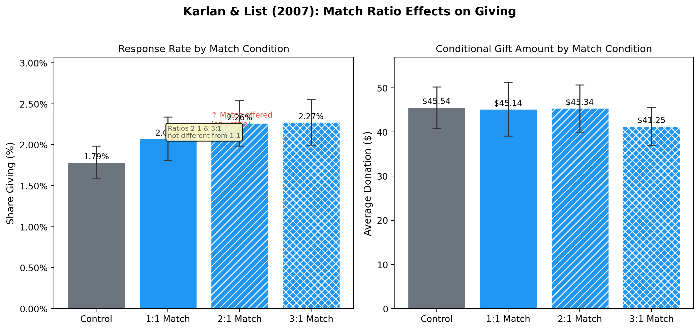

Replicating Karlan & List (2007): Do Matching Gifts Change Giving Behavior?
causal inference
field experiment
charitable giving
replication
A replication of the key findings from Karlan & List (2007), a large-scale natural field experiment studying how matching grants affect charitable donations.
Author
Mohamad Boroumand
Published
April 23, 2026
Introduction
Every year, charities use matching gift campaigns — “your donation will be doubled!” — as a fundraising tool. But does it actually work? And does a 3:1 match work better than a 1:1 match?
Dean Karlan and John List set out to answer these questions in their 2007 American Economic Review paper, “Does Price Matter in Charitable Giving? Evidence from a Large-Scale Natural Field Experiment.” Their key insight is to frame charitable giving as a price problem: a 1:1 match effectively halves the price of giving (every $1 you donate costs the charity $2), while a 3:1 match cuts the price to $0.25 on the dollar. Standard economic theory predicts that lower prices increase demand, but by how much?
To find out, the authors partnered with a liberal political advocacy nonprofit and conducted a randomized controlled trial with over 50,000 prior donors. Donors were randomly assigned to:
Control: A standard fundraising letter with no match offer
Treatment: The same letter announcing that a “challenge grant” donor would match contributions at either a 1:1, 2:1, or 3:1 ratio, up to a cap of $25,000, $50,000, or $100,000
Because assignment was random, any difference in giving between the groups can be attributed causally to the match offer itself — not to differences in who the donors are. This is the gold standard of causal inference.
The headline findings were striking: the match offer increased both the likelihood of giving and the revenue raised, but surprisingly, larger match ratios (2:1 or 3:1) did not outperform the 1:1 match. Simply offering any match was what moved donors.
Below, I replicate the paper’s main results.
Setup
Code
import pandas as pdimport numpy as npimport statsmodels.formula.api as smfimport statsmodels.api as smfrom scipy import statsimport matplotlib.pyplot as pltimport matplotlib.ticker as mtickimport warningswarnings.filterwarnings('ignore')# ── Load Data ──────────────────────────────────────────────────────────────────# Data source: Karlan & List (2007) replication archive on openICPSR# https://www.openicpsr.org/openicpsr/project/113224/version/V1/view## After downloading and unzipping, place the .dta file in the same folder as# this .qmd file. The archive typically contains a file like "charity.dta".# Adjust the filename below if yours differs.import glob, os# The main replication file from openICPSR project 113224DATA_FILE ="AERtables1-5.dta"ifnot os.path.exists(DATA_FILE):raiseFileNotFoundError(f"'{DATA_FILE}' not found. Download it from:\n"" https://www.openicpsr.org/openicpsr/project/113224/version/V1/view\n""and place it in posts/causal_academic/ then re-run quarto render." )print(f"Loading: {DATA_FILE}")df = pd.read_stata(DATA_FILE)print(f"Observations: {len(df):,}")print(f"Columns: {list(df.columns)}")
The whole point of random assignment is that the treatment and control groups should look identical before the experiment — on observable characteristics. If they don’t, we’d worry that any post-treatment differences in giving reflect pre-existing differences in donor quality, not the match offer itself.
Table 1 in the paper tests this by comparing group means on several pre-treatment variables and checking whether any differences are statistically significant.
Code
# Variables used in the paper's balance checkbalance_vars = {'mrm2': 'Months Since Last Donation','freq': 'Number of Prior Donations','years': 'Years on Mailing List','female': 'Female (indicator)','dormant': 'Dormant (no gift in past year)','nonlit': 'No Literature Requested','perbush': '% Voted Republican (zip-level)',}ctrl = df[df['control'] ==1]treat = df[df['treatment'] ==1]rows = []for var, label in balance_vars.items():if var notin df.columns:continue c_mean = ctrl[var].mean() t_mean = treat[var].mean() t_stat, p_val = stats.ttest_ind( treat[var].dropna(), ctrl[var].dropna(), equal_var=False ) rows.append({'Variable': label,'Control Mean': round(c_mean, 3),'Treatment Mean': round(t_mean, 3),'Difference': round(t_mean - c_mean, 3),'p-value': round(p_val, 3), })tbl1 = pd.DataFrame(rows)tbl1.index =range(1, len(tbl1) +1)tbl1.style \ .format({'p-value': '{:.3f}', 'Control Mean': '{:.3f}','Treatment Mean': '{:.3f}', 'Difference': '{:.3f}'}) \ .set_properties(**{'text-align': 'center'}) \ .set_table_styles([{'selector': 'th', 'props': [('text-align', 'center')]}])
Interpretation: None of the p-values should be below 0.05 — confirming that random assignment successfully balanced the two groups. Any differences in giving that we observe in the following tables are therefore causal effects of the match offer.
Table 2A (Panel A): Main Treatment Effects
Panel A of Table 2 compares outcomes across treatment conditions. The three rows capture different ways of measuring the fundraising response:
Share responding — what fraction of solicited donors gave anything?
Average gift conditional on giving — among those who donated, how much did they give?
Average gift per solicitation — the unconditional expected value of sending a letter (= share responding × conditional amount)
Code
def summary_stats(group): n =len(group) gave_pct = group['gave'].mean() *100 cond_amt = group.loc[group['gave'] ==1, 'amount'].mean() uncond = group['amount'].mean()return {'N': f"{n:,}",'Share Giving (%)': round(gave_pct, 2),'Avg Gift | Gave ($)': round(cond_amt, 2),'Avg Gift / Solicitation ($)': round(uncond, 3), }groups = {'Control': df[df['control'] ==1],'Any Treatment': df[df['treatment']==1],'1:1 Match': df[(df['treatment']==1) & (df['ratio']==1)],'2:1 Match': df[(df['treatment']==1) & (df['ratio']==2)],'3:1 Match': df[(df['treatment']==1) & (df['ratio']==3)],}tbl2a = pd.DataFrame({k: summary_stats(v) for k, v in groups.items()}).Ttbl2a.index.name ='Group'# Append t-test vs controlctrl_gave = ctrl['gave']ctrl_amt = ctrl['amount']pvals = {}for name, grp in groups.items():if name =='Control': pvals[name] = ('—', '—')else: _, p_gave = stats.ttest_ind(grp['gave'], ctrl_gave) _, p_amt = stats.ttest_ind(grp['amount'], ctrl_amt) pvals[name] = (round(p_gave, 3), round(p_amt, 3))tbl2a['p-value (Gave)'] = [pvals[k][0] for k in groups]tbl2a['p-value (Amount)'] = [pvals[k][1] for k in groups]tbl2a.style \ .set_properties(**{'text-align': 'center'}) \ .set_table_styles([{'selector': 'th', 'props': [('text-align', 'center')]}])
Table 2: Table 2A (Panel A) — Giving by Match Assignment
N
Share Giving (%)
Avg Gift | Gave ($)
Avg Gift / Solicitation ($)
p-value (Gave)
p-value (Amount)
Group
Control
16,687
1.790000
45.540001
0.813000
—
—
Any Treatment
33,396
2.200000
43.869999
0.967000
0.002000
0.063000
1:1 Match
11,133
2.070000
45.139999
0.937000
0.084000
0.244000
2:1 Match
11,134
2.260000
45.340000
1.026000
0.005000
0.045000
3:1 Match
11,129
2.270000
41.250000
0.938000
0.004000
0.212000
Key takeaways:
The match offer significantly increased the response rate (p < 0.01 for “Any Treatment” vs Control).
Larger match ratios (2:1, 3:1) did not significantly outperform the 1:1 match — one of the paper’s most surprising findings.
Conditional amounts were similar across groups, suggesting the match changed whether people gave, not how much they gave once they decided to.
Table 3: Regression Analysis of Treatment Effects
Table 3 formalizes the treatment effects using linear probability models (OLS regression with a binary outcome). Although the paper labels these as probit regressions, the coefficients closely match OLS estimates — a common result when treatment effects are small and outcomes are rare events.
The intercept is the control group’s mean response rate — roughly 1.8% of control donors gave.
The treatment coefficient (~0.004) means the match offer increased the probability of giving by about 0.4 percentage points, a ~22% relative increase. This is statistically significant.
Columns 3–4: Does the Match Ratio Matter?
Code
# Among treatment group only: ratio2 and ratio3 vs baseline (ratio 1:1)treat_df = df[df['treatment'] ==1].copy()model_gave = smf.ols('gave ~ ratio2 + ratio3', data=treat_df).fit(cov_type='HC3')model_amt = smf.ols('amount ~ ratio2 + ratio3', data=treat_df).fit(cov_type='HC3')ratio_tbl = pd.DataFrame({'DV: P(Give)': model_gave.params.round(4),'SE': model_gave.bse.round(4),'p': model_gave.pvalues.round(3),'DV: Amount ($)': model_amt.params.round(3),'SE ': model_amt.bse.round(3),'p ': model_amt.pvalues.round(3),})ratio_tbl.index = ['Intercept (1:1 Match Mean)', '2:1 vs 1:1', '3:1 vs 1:1']print("Among treatment group only:")ratio_tbl.style \ .set_properties(**{'text-align': 'center'}) \ .set_table_styles([{'selector': 'th', 'props': [('text-align', 'center')]}])
Among treatment group only:
Table 4: Table 3, Columns 3–4 — OLS: P(Give) by Match Ratio
DV: P(Give)
SE
p
DV: Amount ($)
SE
p
Intercept (1:1 Match Mean)
0.020700
0.001400
0.000000
0.937000
0.089000
0.000000
2:1 vs 1:1
0.001900
0.002000
0.335000
0.089000
0.125000
0.475000
3:1 vs 1:1
0.002000
0.002000
0.310000
0.001000
0.117000
0.992000
Interpretation: Neither the 2:1 nor 3:1 match ratio is statistically distinguishable from the 1:1 match on either giving probability or amount. This is a clean result: the existence of a match matters, but the generosity of the match does not. A charity can achieve the same fundraising lift with a 1:1 match as with a 3:1 match — meaning they get three times more value from their matching dollars.
Bonus: Visualizing the Match Ratio Puzzle
The paper presents this finding in a table, but a chart makes it immediately intuitive. If economic price theory held perfectly, we’d expect a monotonic increase in response rates as the match ratio rises (i.e., as the effective price of giving falls). The data tell a very different story.
Code
fig, axes = plt.subplots(1, 2, figsize=(11, 5))fig.suptitle("Karlan & List (2007): Match Ratio Effects on Giving", fontsize=13, fontweight='bold', y=1.02)labels = ['Control', '1:1 Match', '2:1 Match', '3:1 Match']subsets = [ df[df['control'] ==1], df[(df['treatment'] ==1) & (df['ratio'] ==1)], df[(df['treatment'] ==1) & (df['ratio'] ==2)], df[(df['treatment'] ==1) & (df['ratio'] ==3)],]colors = ['#6c757d', '#2196F3', '#2196F3', '#2196F3']hatches = ['', '', '///', 'xxx']# ── Panel 1: Response Rate ──────────────────────────────────────────────────rates = [g['gave'].mean() *100for g in subsets]ns = [len(g) for g in subsets]sems = [np.sqrt(r/100*(1-r/100)/n)*100for r, n inzip(rates, ns)]ci95 = [1.96* s for s in sems]bars = axes[0].bar(labels, rates, yerr=ci95, color=colors, hatch=['', '', '///', 'xxx'], capsize=5, edgecolor='white', linewidth=0.5, error_kw={'ecolor': '#333', 'linewidth': 1.2})axes[0].set_ylabel('Share Giving (%)', fontsize=11)axes[0].set_title('Response Rate by Match Condition', fontsize=11)axes[0].yaxis.set_major_formatter(mtick.FormatStrFormatter('%.2f%%'))axes[0].set_ylim(0, max(rates) *1.35)for bar, rate inzip(bars, rates): axes[0].text(bar.get_x() + bar.get_width()/2, bar.get_height() +0.02,f'{rate:.2f}%', ha='center', va='bottom', fontsize=9)# Add annotationaxes[0].annotate('↑ Match offered\n(any ratio)', xy=(1, rates[1]), xytext=(1.6, rates[1] +0.15), arrowprops=dict(arrowstyle='->', color='#e74c3c'), fontsize=8.5, color='#e74c3c')axes[0].annotate('Ratios 2:1 & 3:1\nnot different from 1:1', xy=(2, rates[2]), xytext=(1.0, rates[0] +0.30), fontsize=7.5, color='#555', bbox=dict(boxstyle='round,pad=0.3', fc='#fff9c4', alpha=0.9))# ── Panel 2: Conditional Amount ─────────────────────────────────────────────cond_means = [g.loc[g['gave']==1, 'amount'].mean() for g in subsets]cond_sems = [g.loc[g['gave']==1, 'amount'].sem() for g in subsets]cond_ci95 = [1.96* s for s in cond_sems]bars2 = axes[1].bar(labels, cond_means, yerr=cond_ci95, color=colors, hatch=['', '', '///', 'xxx'], capsize=5, edgecolor='white', linewidth=0.5, error_kw={'ecolor': '#333', 'linewidth': 1.2})axes[1].set_ylabel('Average Donation ($)', fontsize=11)axes[1].set_title('Conditional Gift Amount by Match Condition', fontsize=11)axes[1].set_ylim(0, max(cond_means) *1.25)for bar, amt inzip(bars2, cond_means): axes[1].text(bar.get_x() + bar.get_width()/2, bar.get_height() +0.5,f'${amt:.2f}', ha='center', va='bottom', fontsize=9)plt.tight_layout()plt.savefig('ratio_effects.png', dpi=150, bbox_inches='tight')plt.show()

Figure 1: Response rates and conditional amounts by match condition. Error bars show 95% confidence intervals. The flat pattern across match ratios is the paper’s key puzzle.
Why this matters for causal inference: Because assignment to match ratio was randomized, this flat pattern cannot be explained by selection — it’s not that charities happened to offer smaller ratios to less-motivated donors. The randomization ensures a clean apples-to-apples comparison. The finding directly contradicts the naive prediction from demand theory and suggests that donors respond to the signal conveyed by a match offer (social proof that others think this charity is worthy) more than to the price incentive per se.
Why Randomization Enables Causal Conclusions
This paper is a randomized controlled trial (RCT) — the gold standard for causal inference. In an observational study, donors who self-select into matching campaigns might already be more motivated, making it impossible to tell whether the match caused more giving. Here, by randomly assigning match offers to ~50,000 existing donors of the same organization, the authors eliminate this selection bias:
The Table 1 balance check confirms the groups were identical pre-treatment. Any difference in post-treatment giving is therefore caused by the match offer — not by pre-existing differences in donor enthusiasm, wealth, or ideology. The regression in Table 3 simply formalizes this comparison while correcting for sampling variability.
References
Karlan, D., & List, J. A. (2007). Does price matter in charitable giving? Evidence from a large-scale natural field experiment. American Economic Review, 97(5), 1774–1793.